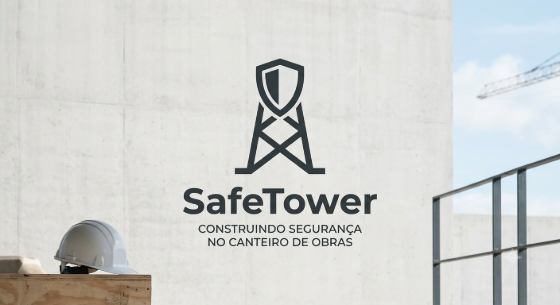

Primeiro post
Sejam bem vindos ao SafeTower, o melhor e mais confiavél app de segurança para sua obra
Por: Murilo Machado Russo

Venha aprimorar a segurança da sua obra com o melhor software do mercado
Sejam bem vindos ao SafeTower, o melhor e mais confiavél app de segurança para sua obra
Por: Murilo Machado Russo

O SafeTower não é só uma boa opção para a sua obra, é uma boa opção para você também, com nosso sistema de suporte 24 horas.
Por: Murilo Machado Russo